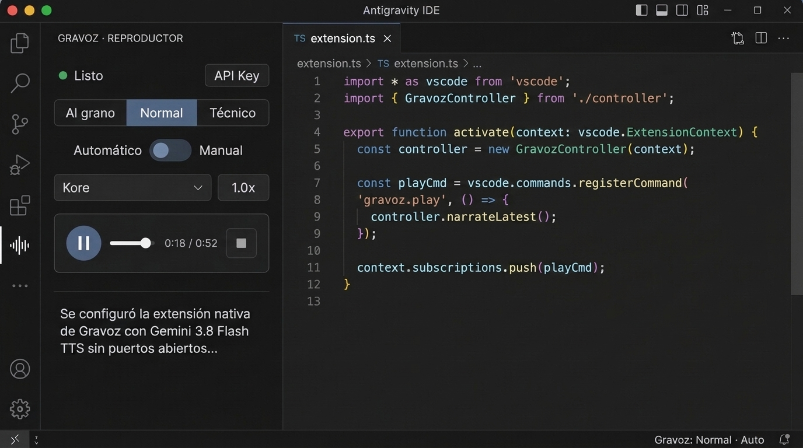

Escucha los planes de Antigravity con criterio técnico.
Plugin open source que entiende tu proyecto y el hilo actual para narrar cada respuesta en español con voz nativa de Gemini.
La extensión nativa de Gravoz ya está integrada en la barra lateral de Antigravity IDE sin puertos abiertos ni dependencias externas. Solo queda pegar tu clave gratuita de Google AI Studio para escuchar cada plan con Gemini 3.8 Flash TTS.
Integrado en tu flujo dentro de Antigravity IDE
Panel lateral nativo con los colores de tu tema y controles directos en la barra inferior para cambiar entre Automático y Manual en un clic.

Instalación en menos de un minuto
Descarga el paquete .vsix desde Releases (sin compilar) o compila desde el código fuente en Linux, macOS y Windows.
1. Abre la pestaña Extensiones (Ctrl+Shift+X) en Antigravity IDE 2. Busca: gravoz (o mylnzon58.gravoz) 3. Pulsa Install 4. Abre el icono de Gravoz y pega tu clave gratuita de aistudio.google.com/apikey
git clone https://github.com/mylnzon58/gravoz.git cd gravoz ./scripts/install.sh
git clone https://github.com/mylnzon58/gravoz.git cd gravoz .\scripts\install.ps1
Diseñado para programar sin perder el foco
Todo ocurre dentro de tu editor con controles directos, baja latencia y almacenamiento local privado.
Panel lateral adaptado al tema de tu editor, controles rápidos en la barra inferior y atajos de teclado para escuchar o detener sin abrir paneles.
Alterna en cualquier momento entre Al grano (15 a 30s), Normal (45 a 80s) o Técnico (90 a 150s), con caché instantánea y botón para copiar el resumen limpio en 1 clic.
Selecciona cualquier fragmento o función en el editor y usa «Gravoz: Explicar selección con voz» (Ctrl+Alt+E) para escucharlo conectado al contexto real de tu repositorio.
Aísla las sesiones por proyecto cuando trabajas con varias ventanas abiertas, omite respuestas triviales de una línea en modo Automático y ofrece sugerencias opcionales desactivadas por defecto.
Voces femeninas y masculinas de Google Gemini en español e inglés con rotación automática de modelos y soporte para claves de respaldo opcionales.
Funciona directamente entre tu editor y tu cuenta de Google AI Studio, sin servidores intermedios ni telemetría externa.
Apoya el desarrollo open source
Gravoz AI es libre y gratuito. Si te ahorra tiempo todos los días, puedes patrocinar el proyecto en GitHub Sponsors.